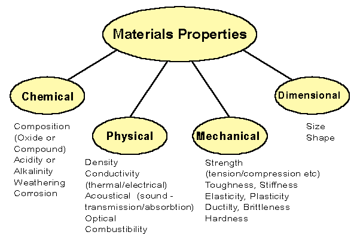
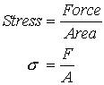
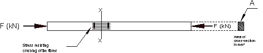
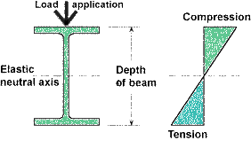
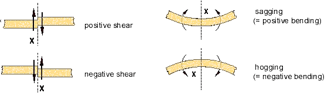
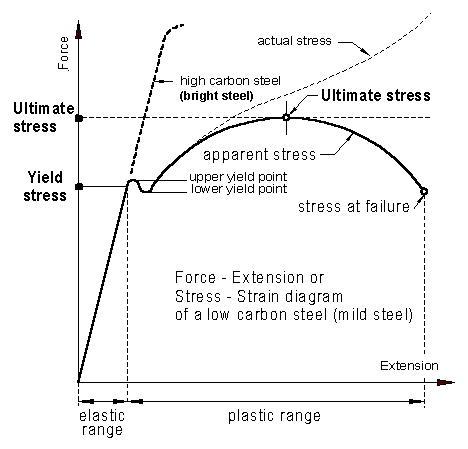
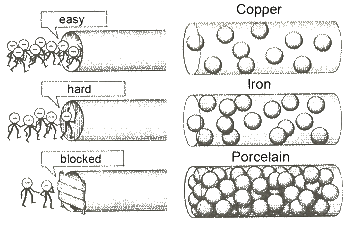

All materials have certain qualities and characteristics that can be defined and tested. The main properties of construction materials include compressive strength, tensile strength, density, durability, conductivity and porosity. Many other properties exist including thermal conductivity, fire resistance, sound resistance and appearance. Certain materials are designed to have specific properties. A material may be designed to have very high compressive strength (for example concrete).
All materials need to comply with Australian standards and Building Code of Australia to ensure they are fit for their intended purpose.
To consider the behaviour of the building materials we should be able to define their properties. As can be seen there are properties like chemical, physical, mechanical and dimensional. The most important properties are the mechanical. These properties, which include strength, elasticity, ductility, malleability, plasticity, brittleness, toughness, and hardness can be changed and not the others.
The mechanical properties are defined below:
Strength.
The strength of a material is the resistance which e.g. 1 mm² of section can offer to a load, which will just cause fracture. This breaking strength is also referred to as ultimate strength. All stress related figures refer to the yield strength. Up to the yield point the material behavior is elastic. That means limit strength, the word indicates the resistance offered by the material under the conditions implied, usually in the form of strength per mm² of section, or stress, for comparative purposes.
Stress: Force per unit area within materials that arises from externally applied forces. It is the internal reaction force in a material created by an external loading.
 |
|
Where
s = stress (st = tensile stress)
( sc = compressive stress)
( sy = yield stress) |
F = total load in newton (N) or kilo-newton (kN)
A = cross-sectional area usually in millimeter squared
The unit of stress is pascal (Pa), and multiples of the pascal i.e. kilopascal (kPa) and megapascal (MPa).
Note: 1 Pa = 1 N/m²
1 MPa = 1 N/mm²
Tensile stress
The steel bar shown below has a cross section area A (mm²) and is pulled out at each end by forces F. (Note that the total force in the member is F kN not 2F kN. At the plane x-x there exists a state of stress between the fibres on one side of plane x-x and those on the other.
This stress is evenly distributed over the cross-section and set up along the whole length of the bar and not in plane x-x only, just as in a chain resisting forces are set up by every link. Each square millimeter of cross-section provides the same resistance to the pulling apart tendency
Compressive stress
Compressive stress is similar to the tension stress but the forces acting towards each other putting the bar in compression. Here the cross section is resisting the tendency of the fibres to be crushed.

Bending Stress
|  |
|
Bending stress is a form of stress seen when loads are applied perpendicularly to an object, forcing it to deflect under the load. When a structural member is loaded as shown in the opposite figure a bending stress will result. Bending stress is a more specific type of normal stress. The top of the beam is in compression then it deceases to zero at the neutral axis and changes to a tensile stress with it greatest magnitude at the bottom.. |
Deflection
The deformation of a beam is usually expressed in terms of its deflection from its original unloaded position. This deflection depends on its length, its cross-sectional shape, the material, where the deflecting force is applied, and how the beam is supported.

Effect of external forces
Elasticity.
Elasticity is the property by which a material is enabled to return exactly to its original shape on removal of a straining force, a very important property in materials. It is measured by, the Elastic Limit.
Exceeding the yield stress the material will permanently deform and not return to its original shape.

Stress - Strain or Force - Extension diagram
Plasticity.
Plasticity is the reverse of elasticity; a plastic material will retain exactly the shape it assumes under load when the load is removed. Clay when wet is a plastic material.
Toughness.
Toughness may be defined as the resistance of a material, after its yield point has been passed, to fracture by repeated bending or twisting. A tough material offers resistant to impact load.
Hardness.
The term Hardness is usually defined as the degree of resistance to indentation. It is also used to refer to the resistance to scratching, Hardness is a property that furniture surfaces, plaster etc. should exhibit.
The physical properties are defined below:
Density
The mass per unit volume of a material is called density. To work out the density of something, divide mass (how much it weighs), by volume (how much space it takes up). The density of water is 1000Kg/m3 , and other substances are of different densities, some heavier and some lighter than water. To keep things easier, densities are often expressed as "specific gravity", which just means they are expressed as a ratio of the gravity of water. So, water, at 1000/m3 counts as 1 in specific gravity, and here are the densities (expressed as specific gravities) of some other substances:
Concrete 2.4; Steel 7.85; Lead 11.35; Copper 8.92; Aluminum 2.7 etc.
Thermal Conductivity
Heat moves through a material at a specific rate. The rate it travels depends on the material itself: some materials allow heat to move quickly through them, some materials allow heat to move very slowly through them.
It can be shown that the change in length (DL) for a material, is given by the equation where Li is the initial length of the object before heat is added, and is the linear expansion coefficient of the material. Accepted values of several common materials are shown in Table 1
Electric Conductor
.Electrical conductor is medium through which an electric current will flows. A conductor such as a metal has high conductivity, and an insulator like glass or a vacuum has low conductivity.
A conductor is a material which contains movable electric charges. In metallic conductors, such as copper or aluminum, the movable charged particles are electrons.
Electrical conductivity is the measure of the amount of electrical current a material can carry or it's ability to carry a current.
A
simple demonstration shows an ' Electrons man' that find it easy way to walk through copper. With iron it's hard and porcelain blocked the way (no electrons getting through) (see opposite Figure). Copper has a high electrical and is used for wiring . Silver is more conductive, but due to cost it is not practical in most cases. Non-conducting materials, like porcelain, lack mobile charges, and resist the flow of electric current. |
 |
A material can be an electrical conductor without being a thermal conductor, although most metals are both.
Acoustics
Sound transmission
It is necessary to know the acoustic properties of building material and elements. The insulation of air-borne and impact noise in building is essential. Sound levels are measured in decibel.
Sound Transmission Class (or STC) is an integer rating of how well a building partition attenuates airborne sound.
Weighted Sound Reduction Index (Rw) is used to measure the level of sound insulation provided by a structure such as a wall, window, door, etc (see BCA)
|
Under the new sound transmission and insulation provisions, Rw + Ctr is used to describe the sound insulation performance
Rw = The Weighted Sound Reduction Index
Ctr = A correction factor (and is a negative number)
So if a building element has Rw of 60 and a Ctr of -10, its Rw + Ctr will equal 50. |
|
|
PERCEPTION EXAMPLE |
120 |
Extreme jet take off at 100 m |
100 |
Loud car horn |
80 |
Noisy office |
60 |
Average office |
40 |
Moderate quiet office |
20 |
Quiet room |
0 |
Threshold of hearing |
| Australia's guide to environmentally sustainable homes |
|
|
|
Sound absorption
In acoustics, absorption refers to the absorption of sound waves by a material. Sound proofing material is used for noise reduction. The two most commonly-used sound absorption materials are high-quality acoustic foam and specialized acoustic fibreglass
Combustibility
Combustibility is a measure of how easily a material will burn. This is an important property to consider when a material is used for construction. The BCA requires the use of non-combustible materials to limit the fire load, smoke and fire spread for certain types of construction.
close this page
if not needed
|
|